A Bayesian Perspective on Training Speed and Model Selection
TL;DRModels that train faster (with respect to the number of data points they need to fit the dataset) have a higher marginal likelihood. We leverage this to get estimators of the (log) marginal likelihood in linear models that depend on the sum of training losses obtained in an iterative updating procedure. We show an intriguing connection between these estimators and the weight assigned to features in linear regression, and find that the intuition driving these estimators also seems to hold in deep neural networks.
#Introduction
Suppose that you’re trying to build a hotdog classifier, and you have a choice between two neural networks: network A has a cross-entropy loss of 0.01 on the training set, and it reached that loss extremely quickly. Network B obtains a cross-entropy loss of 0.0001 on the training set, but it took a lot longer to get below 0.01 than Network A. You want to use the model that will be the most accurate on new, unseen possible-hotdogs: which do you pick?
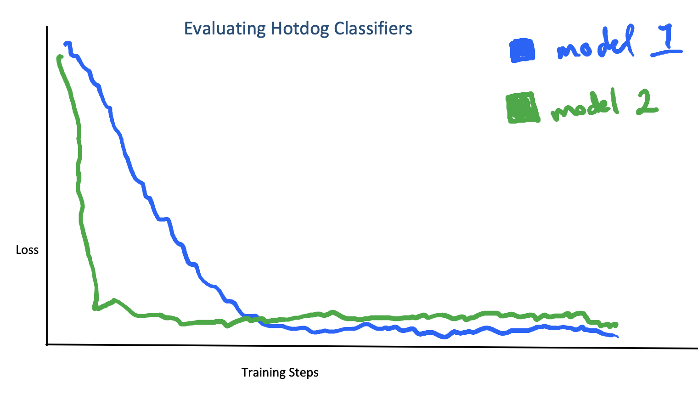
A difficult model selection problem.
If you held out some training data for a validation set, then you can pick the one with better performance on the unseen data and be done. But suppose you don’t have access to a validation set. Is there still a way of justifying the intuition that the model that got a pretty low loss quickly is less likely to have overfit than the model that got an extremely low loss slowly? It turns out the answer is yes – if you’re willing to be Bayesian.
Background on Model Selection
TL;DR
Model selection and generalization are deeply connected
Generalization in neural networks is not well-understood
There are some generalization bounds that are related to training speed
A Bayesian approach to model selection is to pick the model with the highest marginal likelihood
###Model selection in neural networks is hard.
Before digging into the Bayesian perspective, we’re going to give some context for the model selection problem in deep learning. In most machine learning applications, our goal is to produce some function approximator that fits a target function on some unknown data-generating distribution, from which we have samples in the form of a training set. Typically, some points from this training set is hidden from the model during training, and an estimate of the model’s expected risk (its average error on the data generating distribution) is obtained by computing the validation loss on this held-out data. The model with the lowest validation loss is assumed to also have the lowest expected risk. While the validation loss is great as an estimator of empirical risk, it’s not ideal for hyperparameter tuning because a) it’s expensive to optimize and b) it doesn’t explain why a model will generalize well.
Generalization bounds can be used to address both of these issues. A generalization bound gives a high-probability guarantee that the test set error will not exceed a certain value, and can typically be decomposed into an empirical risk estimate (i.e. the training loss) and a model complexity penalty. The model complexity penalty can be interpreted as giving a causal hypothesis for what makes a model generalize well, addressing point a) above. When both of these terms are differentiable, the bound can be optimized directly, addressing point b) above. While generalization bounds can get non-vacuous values on neural networks, they’re generally not tight enough to be useful for model selection. We conjecture that part of the reason these bounds might struggle so much in the deep learning regime is that the model complexity term used typically only depends on the final value of the model’s parameters after training, rather than taking into account properties of the training scheme. Some recent work has developed PAC-Bayesian generalization bounds based on a similar idea, but there’s likely much more that could be explored.
The idea that models which train faster should generalize better is not a new one: generalization bounds based on the stability of gradient descent have existed foryears. These bounds explicitly depend on the number of training steps taken to reach a minimum. However, they also require some assumptions that aren’t obvious to show in the generic deep learning setting. There have also been some more oblique connections in the literature. For example, Arora et al. propose a generalization bound with a data complexity term that can be related to an upper bound on the convergence rate of gradient descent on a convex function.
Instead of trying to directly solve the model selection problem for neural networks, we’re going to take a digression into an easier setting, Bayesian models, and develop some theoretically grounded intuition on the model selection there. Don’t forget about this section though – we’ll come back to it in a bit.
###Bayesian Inference in 2 Minutes
Being a Bayesian is all about using Bayes’ rule to update prior beliefs based on evidence. For example, given a model \(M\) and some data \(D\), our belief that the model generated the data can be expressed in terms of the likelihood the model assigns the data, and our prior probability of the data and the model.
\[P(M|D) = \frac{P(D|M)P(D)}{P(M)}\]
To quantify terms like ‘evidence’ and ‘prior belief’, we translate some standard quantities from the risk minimization framework into probabilistic analogues. Instead of optimizing the parameters of a function using its loss on the data, we have a model \(\mathcal{M}\) which defines a probability distribution over the data \(P(\mathcal{D}|\theta)\) given some parameters \(\theta \in \Theta\), along with a probability distribution over the parameters \(P(\theta)\).
One quantity of interest is to Bayesians is the posterior distribution over parameters \(P(\theta|\mathcal{D})\): finding this distribution is known as parameter inference. While this computation is straightforward in some models like Gaussian Processes, it’s often not tractable to compute exactly for complex models like Bayesian neural networks. However, it’s still possible to get samples from this distribution via techniques such as ensemble methods, where we randomly draw a number of parameter samples from the prior and then optimize each parameter sample independently to get a sample from the posterior.
The quantity that we will be particularly interested in is the marginal likelihood\(P(\mathcal{D})\) (we’ll abbreviate this as ML from here on out). This tells us how likely the data is under the model, and can be written as follows.
If we have a collection of models, picking the one with the highest marginal likelihood is what MacKay calls Type II maximum likelihood estimation and is a popular approach to Bayesian model selection. Maximizing the marginal likelihood is less prone to overfitting than maximum likelihood estimation at the parameter level, as the marginal likelihood can be viewed as having a built-in model complexity term that helps to prevent overfitting.
#Estimating the Marginal Likelihood
Decomposing the log ML
OK, so if we want to perform model selection by maximizing the marginal likelihood, we’ll need to compute the marginal likelihood first. Observe that we can write the (log) ML as follows.
In other words: the marginal likelihood measures how well a posterior update based on one subset of the data \(\mathcal{D}_{<i}\) is able to predict the next data point \(\mathcal{D}_i\). We can visualize the log ML as computing the ‘area under the curve’ of posterior predictive probabilities.
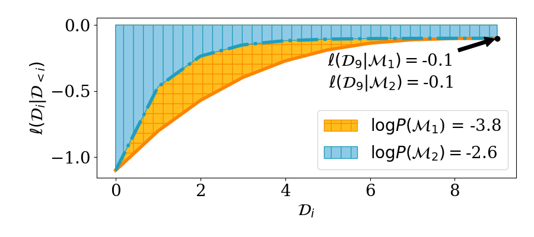
Estimator Zoo
The value \(\log \mathbb{E}[P(\mathcal{D}_i|\theta)]\) isn’t always possible to compute exactly. However, given parameter samples from the posterior, it’s straightforward to estimate a lower bound.
Where the inequality follows from Jensen’s inequality. We can make this inequality tighter by averaging over multiple parameter samples before applying the logarithm to get another estimator that we’ll call \(L_k\).
Finally, if we have samples from the posterior predictive distribution \(P(\hat{D_i} | D_{<i})\) and this distribution is a Gaussian, then we can use our posterior samples to estimate the parameters \(\mu, \sigma^2\) of \(P(\cdot | D_{<i})\) and then use those estimated parameters in the log likelihood term to obtain yet another estimator \(L_S\).
Each of these estimators has its own pros and cons: \(L\) has an intriguing interpretation from the minimum description length framework, but can have a large bias term when used to estimate the ML. \(L_k\) reduces this bias term, but both \(L_k\) and \(L\) can’t be applied to models whose likelihood is a dirac delta distribution (i.e. models with zero observation noise). \(L_S\) works even for models with zero observation noise, but only yields an unbiased estimate of a lower bound when the posterior predictive is Gaussian (otherwise this may no longer be a lower bound).
Estimating the log ML via Gradient Descent
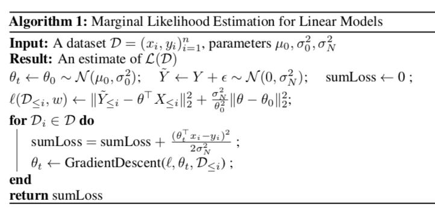
TL;DR: In linear models, we can sample parameters from a prior and then run gradient descent to get a posterior sample to feed into the estimators from the last section.
In linear models, we can get the posterior samples that these estimators need by the ensemble methods described previously. Specifically: in Bayesian linear regression with noiseless Gaussian likelihoods, we can sample parameters from the prior and then optimize the \(\ell_2\) regression loss. The minimum of this optimization problem will correspond to a sample from the posterior of the model conditioned on the data used for optimization. This gives us a way of translating Bayesian updating to gradient optimization with ensembles, which we can adapt to models with noisy likelihoods (assuming we know the ground-truth targets) by adding noise to the targets and optimizing a penalized regression loss which encourages parameters to stay close to their initialized values.
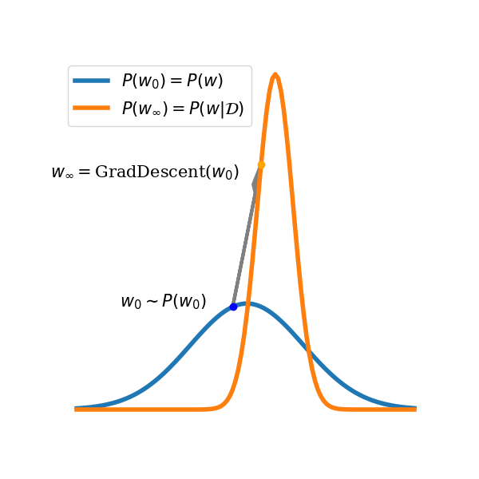 Optimizing a linear regression objective lets us sample from the posterior.
randomly initialize some collection of parameters \((\theta_0^k)\)
for each \(D_i \in D\), run GD on \(D_{<i}\) to convergence for each parameter \(\theta^k_{i-1}\)
take this parameter \(\theta^k_i \sim p(\theta|D_{<i})\) as a posterior sample to estimate \(\log P(D_i|D_{<i})\)
and then add this estimate to a running sum.
In the worst case, this procedure can be enormously expensive, requiring us to run gradient descent to convergence \(n\) times. In practice we found that this wasn’t as expensive as it might as first seem, because if the model fits the data well then the optimal parameters for \(D_{\le i}\) should be similar to those for \(D_{<i}\), so it won’t take long for gradient descent to reach them.
Linear model combinations and \(L(D)\)
TL;DR: if you train a linear regressor on top of predictions from Bayesian models concurrently as the models are being updated, then the model with the highest weight is the one with the highest \(L(D)\), not the one whose final posterior is the best fit.
We can use gradient descent to estimate \(L(D)\), but it also turns out that \(L(D)\) can tell us something about why gradient descent might prefer models with a high (lower bound on their) marginal likelihood. We’ll focus on the setting where we train linear combinations of models while these models are themselves performing Bayesian updating, in a loose sense mimicking what happens when we optimize a hierarchical model like a neural network.
We’ll assume some collection of Bayesian linear regression models \(M_1, \dots, M_k\) and a regression data set of the form \(D = (X_i, Y_i)_{i=1}^N\); each of these models \(M_j\) will output predictions \(\hat{Y^j_i}\) sampled from its posterior \(P(Y_i|D_{<i}, X_i)\). On top of these models we are training a linear predictor \(w\) to minimize the objective \(\|w^\top(\widehat{Y}_i) - Y_i\|^2\). We’ll assume that these models make predictions of a similar scale (i.e. there isn’t a model that consistently outputs \(0.0000001 \times Y_i\) whose optimal weight is then 10000000, while another model which consistently outputs \(Y_i\) would get weight 1), and that they don’t have complementary errors (i.e. it’s not the case that model 1 consistently underestimates the target \(Y\) while model 2 consistently overestimates it in such a way that the optimal solution is to assign a high weight to both so that they cancel each other out). Under these two assumptions, we can show that under the following optimization problem
the optimal solution \(w^*\) will assign the highest weight to the model with the highest \(\mathcal{L}(D)\). In other words, running this concurrent optimization procedure and then doing magnitude pruning on the linear combination is going to be equivalent (in expectation) to picking the model with the highest lower bound on its marginal likelihood.
Empirical Results
TL;DR: our estimators agree with the marginal likelihood on what the ‘best’ model is in a number of different settings.
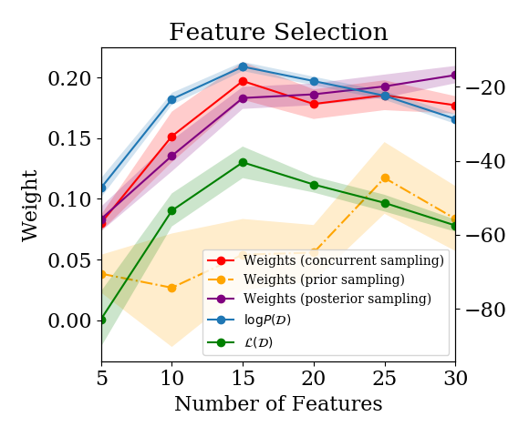 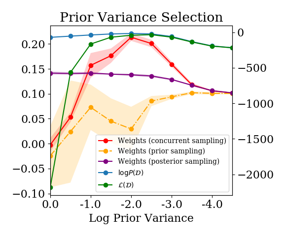 Estimated log P(D) and weight assigned by a linear model combination for various model selection problems. Our estimators give models similar rankings to the log marginal likelihood.
We compared all three estimators on a feature selection task and found that they provided a similar model ranking to that given by the log ML. This is a nice existence proof that the lower bounds give sensible model rankings, and we provide a few more example problems in the paper. The results shown here are for the task of feature selection – i.e., how many (and which) features should we use in our model? We simulate a dataset inspired by of the form \((\textbf{X}, \textbf{y})\), where \(x_i = (y_i + \epsilon_1, y_i + \dots, y_i + \epsilon_{15}, \epsilon_{16}, \dots, \epsilon_{30})\), and consider a set of models \(\{\mathcal{M}_k\}\) with feature embeddings \(\phi_k(x_i) = x_i[1, \dots, k]\). The optimal model selects the first 15 features. This example is typical of a range of model selection tasks that we looked at where the hyperparameter formed a nice “Occam’s Hill”. The estimators tended to agree around the optimal hyperparameter/model, with the estimator for \(L(D)\) penalizing models whose posteriors were too peaked more than the log ML did in models that didn’t fit the data well.
We find similar results when we compare the weight assigned to a Bayesian model in a linear model combination trained online as the Bayesian model is being iteratively updated, as in the procedure described in the previous section. We compare against two other linear model combination approaches: one where we train the linear model combination on samples from the already-fitted posterior \(P(D_i|D)\), and another where we fit the linear model combination on samples from the prior \(P(D_i|\emptyset)\). We again see that \(L(D)\) and \(\log P(D)\) agree close to the optimum. We also see a similar ranking of models between \(L(D)\) and the linear model combination weights given by concurrent sampling – the ‘posterior sampling’ and ‘prior sampling’ approaches do not exhibit this trend, as expected.
Connection to Deep Learning
Recall that the ML measures how well updates from one subset of the data generalize to unseen data points. This gives us an analogy between training speed, as measured by the sum of log predictive posterior likelihoods, and Bayesian model selection. Training speed in a Bayesian updating procedure is defined with respect to the number of data points needed to assign high likelihood to the rest of the training data. However, in many settings where we might want to do model selection, we don’t necessarily have exact posterior samples from a Bayesian model conditioned on increasing subsets of the data. Standard gradient-based optimization of deep neural networks (DNNs) involves iterating through the entire dataset repeatedly for several epochs, so we’ll need to consider training speed with respect to the number of gradient steps taken, rather than the number of data points seen. In this section, we’re going to take a first stab at the following question:
Does there exist a connection between a notion of training speed that captures within-training-set generalization in DNNs, and their test set generalization performance?
To apply the Bayesian intuition to neural networks requires us to map some of the concepts discussed earlier in the Bayesian setting to the risk minimization setting.
Bayesian model \(\equiv\) function approximator
Posterior \(P(\theta|D) \equiv\) Point estimate \(\theta^*\)
While there are many interesting lines of work framing stochastic gradient optimization as performing posterior sampling, in the analysis that follows we won’t be using this interpretation. Nor will we try to cast classifiers as computing unnormalized probability distributions. Instead, we’re going to focus on using minibatch SGD to measure how well model updates based on one subset of the data generalize to other subsets.
###Motivation: Minibatch Loss as a Risk Estimator
TL;DR: when you compute a minibatch gradient update, your loss on the next, disjoint minibatch gives you an idea of how well that gradient update will generalize to your test set.
How quickly a model’s training loss decreases while training depends on a number of factors including the optimizer, hyperparameters, model architecture, and dataset. However, all else being equal, a model’s loss will decrease faster if the gradient update based on minibatch \(i\) of the dataset also decreases the loss on minibatch \(i+1\). This relates to the notion of stiffness discussed by Fort et al., who argue that models for which gradients from minibatches all look similar should generalize better than those whose minibatch updates are orthogonal. Summing over the minibatch training losses then gives us a straightforward way to measure how well the gradients are generalizing. Models which attain a low loss with fewer training steps will have a lower sum over training losses (SOTL).
To illustrate how SOTL might measure within-minibatch gradient generalization, consider a first-order Taylor approximation of the training loss. The change in loss for minibatch \(i\) after taking a gradient step computed on that minibatch looks as follows
Meanwhile, the change due to gradients tep \(g_{t_i}\) on a disjoint minibatch \(D_j\) can be written
\[\begin{align}
\ell(D_j; \theta_{t+1}) = \ell(D_j; \theta_t - \alpha g_{t}) &\approx \ell(D_j; \theta_t) - \nabla_\theta \ell (D_j; \theta)^\top g_t \\
&= \ell(D_j; \theta_t) - \nabla_\theta \ell (D_j; \theta)^\top \nabla_\theta \ell(D_i; \theta)
\end{align}\]
This dot product term measures how correlated gradients based on disjoint minibatches are. For the first epoch of training, this gives an unbiased estimate of the improvement to the expected risk obtained by the gradient step. After the first epoch, because the parameters will depend on all data points in the training dataset, we can’t get nice guarantees on this being a good estimate of the change in the test set loss. Nonetheless, for a large training set we can argue that because the parameters depend minimally on any particular minibatch, we should still get a pretty good estimate of the change in the test set error.
Concretely, we hypothesize that under fixed-stepsize SGD, models that obtain a lower sum over training losses should get the best test set performance. We evaluated a handful of different neural network architectures trained on image datasets and found that this correlation was fairly consistent. A more in-depth empirical analysis in the setting of neural architecture serach was performed by Ru et al.
Empirical Results
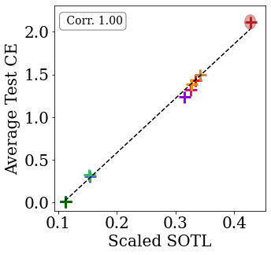
Models which train faster (as measured by their sum over training losses) generalize better.
We now ask whether the connection between \(\mathcal{L}(\mathcal{D})\) and the weight assigned to a model in a linear model combination might also apply in some form to the deep learning setting. The lemma doing the heavy lifting in the proof of this result basically says that the weight assigned to a feature in a linear regression problem depending to some extent on that feature being fairly predictive of the target (modulo a bunch of assumptions). We make a similar conjecture for the weight assigned to activations in the penultimate layer of a neural network: features which are more predictive of the targets will be assigned higher weight. Because the final-layer weights and activations are trained concurrently, we expect that the notion of how predictive a node is will be more closely aligned with the SOTL definition rather than its final ‘training loss’.
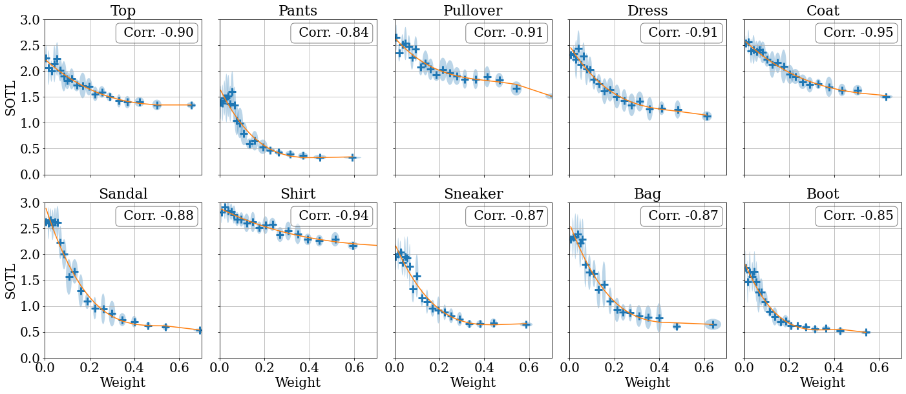
Layer activations which train faster (as measured by their sum over ‘information losses’) are assigned higher weight by the final layer of a neural network.
To investigate this claim, we train a linear combination of models, and see whether the test loss correlates with the assigned model weight. We observe that SGD tends to upweight models that generalize better. This suggests that SGD may implicitly perform model selection. Interestingly, we see that this phenomenon also holds for subnetworks within a network. The above figure shows that SGD upweights sub-networks with lower SOTL. These results are far from the final word on the topic, and we believe they present an interesting direction for future work.
Recap
The goal of this paper was to analyze the connection between Bayesian model selection and training speed in order to gain insight into how models generalize. We proposed a family of estimators of the marginal likelihood that measure a notion of training speed, and which depend only on samples from the posteriors of Bayesian models. We further showed that this quantity is equivalent to measuring how well updates based on one subset of the data generalize to other subsets, and that an analogous measure on deep neural networks also appears to empirically correlate with generalization error. Our results thus point both to a way of doing principled Bayesian model selection on families of models from which we can obtain posterior samples, and also to a direction of inquiry towards understanding generalization in complex function approximators based on optimization trajectories rather than only post-training quantities.
 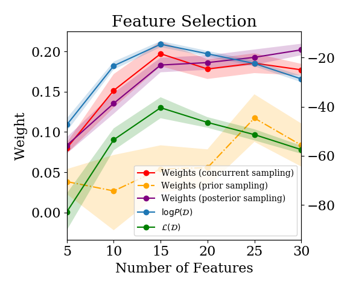 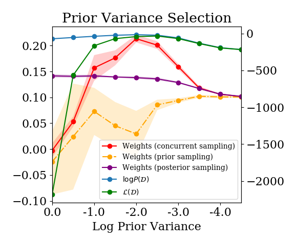
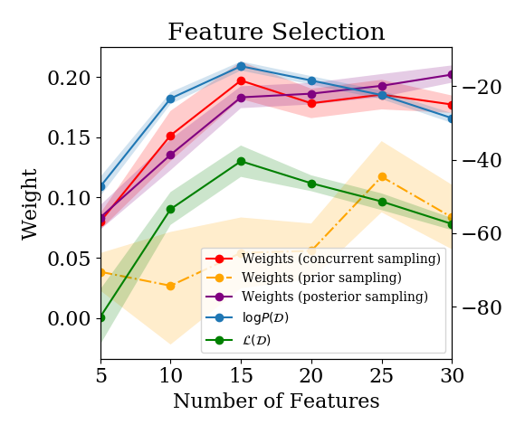 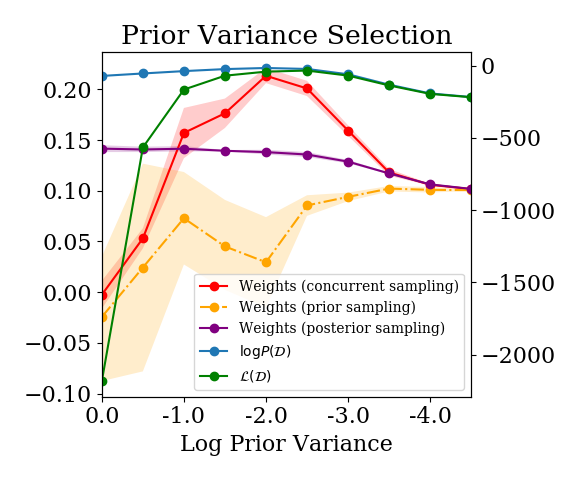